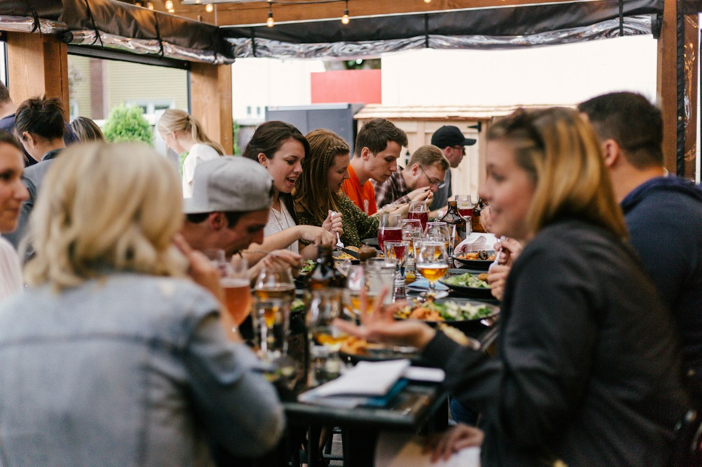

Small gathering. Photos worth finding.
Meetups, workshops, and community days deserve a thoughtful photo handoff too. Share one collection with the people who made it happen.
Give attendees an easier way to find themselves in your event photos. Upload your collection, share one link, and let a selfie start the search.
Built for conference hosts, community organizers, and event photographers.

The photographer sends the gallery. You share the link. Then everyone starts the same search: scrolling past unfamiliar faces, opening group shots, and wondering whether they missed their own.
Give them a place to start with themselves.
Try the sample searchOpen the event link, sign in, and add a clear photo of your face. Browse the likely matches, then download the photographs you want to keep.
Illustrative demo with sample imagery only. Nothing is uploaded and no face search runs on this page.
The whole sample event: 18 illustrated photos.
Sample event page
Step 1 of 4
Spring Community Day
Sign in, add a selfie, and look for likely matches in this event’s photos.
Step 2 of 4
Attendees sign in before searching an event. In this preview you continue as a sample attendee, and no account is created.
Step 3 of 4
Use a clear, well-lit photo with one face.
Step 4 of 4
Create your event and add the photographs you want attendees to search.
FindPhotosOfMe processes the photographs for face matching. Share it once it is ready.
Put it in your follow-up email, event chat, or event website so attendees can start their search.
Preview note: this is the intended organizer flow, and it is still being validated end to end. Photos are prepared after you upload them, not live while the photographer is shooting.
Give everyone the same event link and a search that starts with their own selfie. Your team can share the collection without becoming a photo-finding help desk.
You already captured the conversations, the stage moments, and the group shots. Make it easier for attendees to discover the photographs they are part of. It sits alongside your shoot and editing workflow; it doesn’t sell prints or handle client proofing.
Talks on the main stage, afternoon workshops, and the closing group photo.
Speakers on stage. Attendees between sessions. The group photo at the end. Give the people in your conference photographs a direct place to look for themselves.
Meetups, workshops, and community days deserve a thoughtful photo handoff too. Share one collection with the people who made it happen.
Hackathons and demo days move fast. Share one link after the final demos so each participant can look for their own photos.
Pilot idea
Races can produce more photos than any participant wants to scroll through. Selfie search could help runners find their moments. It needs testing with adult running events and a representative photo collection first, and there is no bib-number search.
| Handoff | What the attendee does | Where it fits |
|---|---|---|
| ZIP archive | Downloads the collection and browses files | Delivering the complete shoot |
| Shared photo album | Opens the album and browses photographs | Viewing the event as a whole |
| FindPhotosOfMe | Opens the event link, signs in, and searches with a selfie | Finding likely photographs of one person |
A full album is still useful. Share it alongside the search link, so people can see the whole event and find themselves in it.
I built FindPhotosOfMe after working with photographs from an IT Arena conference in Ukraine. People could send a selfie to a Telegram bot and find photographs of themselves. Now I’m turning that practical tool into something more organizers can use.
Ivan, creator of FindPhotosOfMe
This is the founder’s own account, not an endorsement by the conference or its organizers.
Organizers pay to host and process the event collection. Attendees can search without buying a photo-search plan.
Launch pricing is being finalized.
Pay once for each event you host. It covers hosting and preparing your event collection. The proposed model is one payment per event, not a subscription.
Open the event link, sign in, search with a selfie, and download their photos. No photo-search plan to buy.
Each event plan will state how many photos it covers and how long the search link stays available.
Selfie search compares a reference photo with faces in the selected event collection. Matches can be imperfect. Review the results before downloading.
These answers will be published once the policies and the product behavior behind them are in place:
Conference hosts, community organizers, and photographers who want to help attendees find themselves in an event collection.
They open the event link, sign in, and upload a clear selfie. The service looks for likely matches in that event’s photographs.
The planned model keeps attendee search free. The organizer pays for the event collection.
They can use the event’s web page in a browser. The original version also used Telegram; availability for a given event should be confirmed.
No face-matching system is perfect. Clear faces and good lighting help; distance, motion, face coverings, and unusual angles can affect results.
It depends on the collection and the service workload. Wait until the event is ready before sharing the search link. Timing guidance will be published after benchmarking.
It is a promising use case to test with a representative photo collection. Sports photos and very large galleries have not yet been validated for the new offering.
Preview answer: storage, processing, and deletion will be explained clearly before the live product collects any selfie. This page collects nothing.
Give attendees a simple place to look for the moments they were part of.